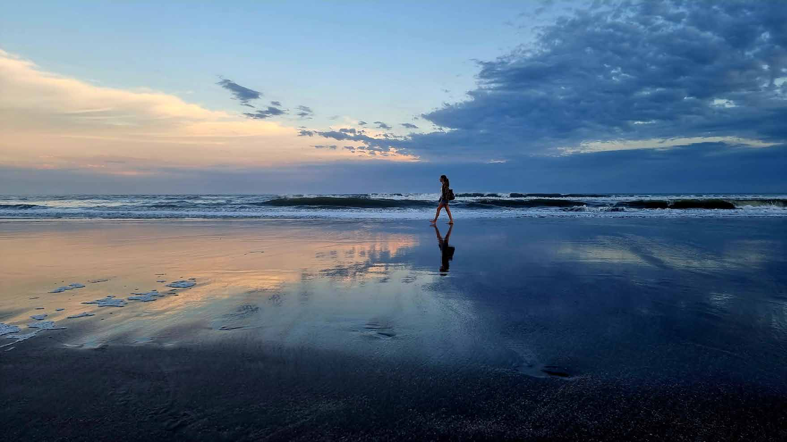

NeuroArquitect Artist
The Blue Maker™
Entornos Sensoriales · Bienestar · Investigación en Longevidad
Arquitecta, artista, conferencista e investigadora que trabaja en el punto de encuentro entre la neuroarquitectura, el color y el mar — diseñando espacios y experiencias que ayudan a las personas a sentir, y a pensar, con más claridad.